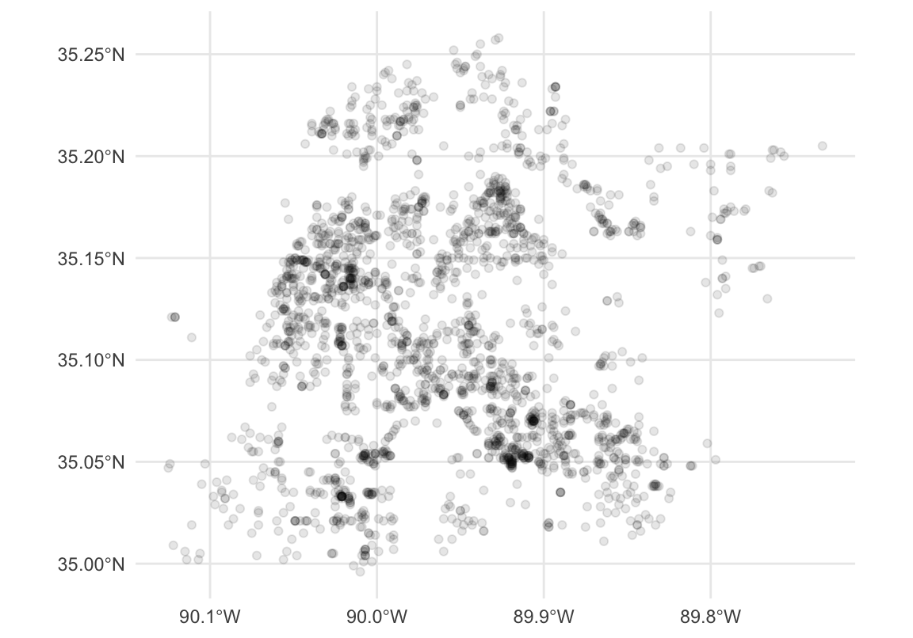
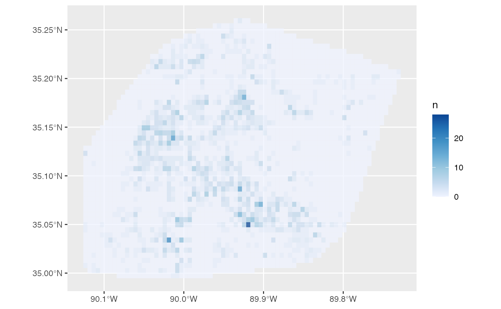
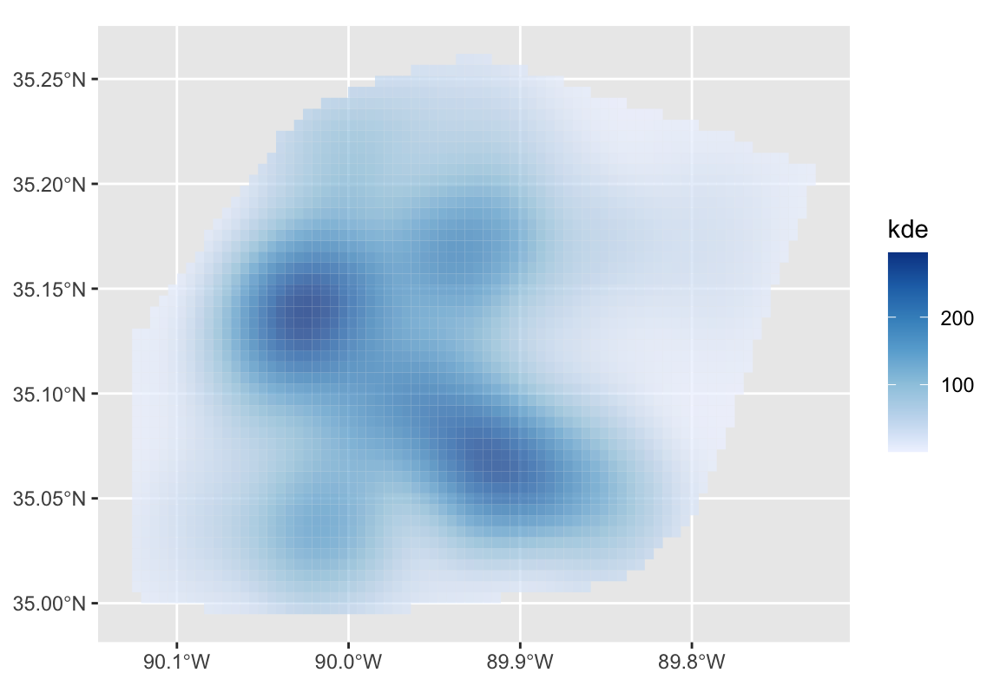

Simple feature collection with 2245 features and 3 fields
Geometry type: POINT
Dimension: XY
Bounding box: xmin: -90.125 ymin: 34.996 xmax: -89.733 ymax: 35.258
Geodetic CRS: WGS 84
# A tibble: 2,245 × 4
uid offense_type date geometry
* <int> <fct> <dttm> <POINT [°]>
1 15213800 personal robbery 2019-01-01 01:30:00 (-89.942 35.149)
2 15214030 personal robbery 2019-01-01 20:00:00 (-89.86 35.059)
3 15214042 personal robbery 2019-01-01 21:58:00 (-89.929 35.058)
4 15214050 personal robbery 2019-01-01 22:30:00 (-90.018 35.201)
5 15214118 personal robbery 2019-01-02 09:38:00 (-89.96 35.14)
6 15214242 personal robbery 2019-01-02 18:50:00 (-89.953 35.159)
7 15214290 personal robbery 2019-01-02 23:30:00 (-89.95 35.026)
8 15214295 personal robbery 2019-01-03 00:00:00 (-89.932 35.076)
9 15214319 personal robbery 2019-01-03 03:00:00 (-90.021 35.033)
10 15214428 personal robbery 2019-01-03 14:45:00 (-90.032 35.165)
# ℹ 2,235 more rowssfhotspot is a package for understanding patterns in data that represent points in space. You can use it to:
- count points in different places with
hotspot_count(), - estimate the density of points with
hotspot_kde()andhotspot_dual_kde(), - show changes in the distribution of points over time with
hotspot_change(), - identify places with more points than would be expected by chance with
hotspot_gistar(), and - classify areas based on the number of points in them during different periods with
hotspot_classify().
The specific motivation for this package was to analyse the locations of crimes, but the functions should be useful for understanding patterns in points representing other features or events. The package is called sfhotspot because it works with (and – where relevant – produces) SF objects as produced by the sf package. sfhotspot also produces data that is tidy, making it easy to use functions from packages such as dplyr to filter the results, etc.
All the functions in sfhotspot work on an SF data frame or tibble in which each row in the data represents a single point (e.g. the location of an event). In this introduction we will use the built-in memphis_robberies dataset to show how each of the hotspot_*() family of functions works. memphis_robberies contains details of 2,245 robberies in Memphis, Tennessee, in 2019.
We can plot this raw data, but the resulting plot is not very informative (even with the points made semi-transparent), since there are too many points to see clear patterns.
ggplot(memphis_robberies) +
geom_sf(alpha = 0.1) +
theme_minimal()
Counting points
The hotspot_count() produces an SF object with counts for the number of points in (by default) each cell in a grid of cells. As with all the functions in the package, this can be customised in various ways – see Common arguments, below.
point_counts <- hotspot_count(memphis_robberies)Cell size set to 0.00524 degrees automatically
point_countsSimple feature collection with 2926 features and 1 field
Geometry type: POLYGON
Dimension: XY
Bounding box: xmin: -90.1261 ymin: 34.99475 xmax: -89.72786 ymax: 35.26199
Geodetic CRS: WGS 84
# A tibble: 2,926 × 2
n geometry
* <dbl> <POLYGON [°]>
1 0 ((-90.08418 34.99475, -90.07894 34.99475, -90.07894 34.99999, -90.0841…
2 0 ((-90.07894 34.99475, -90.0737 34.99475, -90.0737 34.99999, -90.07894 …
3 0 ((-90.0737 34.99475, -90.06846 34.99475, -90.06846 34.99999, -90.0737 …
4 0 ((-90.06846 34.99475, -90.06322 34.99475, -90.06322 34.99999, -90.0684…
5 0 ((-90.06322 34.99475, -90.05798 34.99475, -90.05798 34.99999, -90.0632…
6 0 ((-90.05798 34.99475, -90.05274 34.99475, -90.05274 34.99999, -90.0579…
7 0 ((-90.05274 34.99475, -90.0475 34.99475, -90.0475 34.99999, -90.05274 …
8 0 ((-90.0475 34.99475, -90.04226 34.99475, -90.04226 34.99999, -90.0475 …
9 0 ((-90.04226 34.99475, -90.03702 34.99475, -90.03702 34.99999, -90.0422…
10 0 ((-90.03702 34.99475, -90.03178 34.99475, -90.03178 34.99999, -90.0370…
# ℹ 2,916 more rowsWe can then plot that grid of cells.
ggplot() +
geom_sf(
mapping = aes(fill = n),
data = point_counts,
alpha = 0.75,
colour = NA
) +
scale_fill_distiller(direction = 1)
Calculating kernel density
The hotspot_kde() function can be used to calculate kernel density estimates for each cell in a grid. The kernel density estimation (KDE) can be customised using the bandwidth and bandwidth_adjust arguments. This function also accepts the argument explained in the Common arguments section, below.
If you do not specify any optional arguments, hotspot_kde() will try to choose reasonable default values.
robbery_kde <- hotspot_kde(memphis_robberies)Cell size set to 0.00524 degrees automatically
Data transformed to "WGS 84 / UTM zone 16N" co-ordinate system.
ℹ CRS code: "EPSG:32616".
ℹ Unit of measurement: metre.
Bandwidth set automatically based on rule of thumb.
ℹ Bandwidth = 5,588 metres.
robbery_kdeSimple feature collection with 2926 features and 2 fields
Geometry type: POLYGON
Dimension: XY
Bounding box: xmin: -90.1261 ymin: 34.99475 xmax: -89.72786 ymax: 35.26199
Geodetic CRS: WGS 84
# A tibble: 2,926 × 3
n kde geometry
* <dbl> <dbl> <POLYGON [°]>
1 0 15.7 ((-90.08418 34.99475, -90.07894 34.99475, -90.07894 34.99999, -9…
2 0 16.9 ((-90.07894 34.99475, -90.0737 34.99475, -90.0737 34.99999, -90.…
3 0 18.4 ((-90.0737 34.99475, -90.06846 34.99475, -90.06846 34.99999, -90…
4 0 20.1 ((-90.06846 34.99475, -90.06322 34.99475, -90.06322 34.99999, -9…
5 0 22.5 ((-90.06322 34.99475, -90.05798 34.99475, -90.05798 34.99999, -9…
6 0 26.3 ((-90.05798 34.99475, -90.05274 34.99475, -90.05274 34.99999, -9…
7 0 31.2 ((-90.05274 34.99475, -90.0475 34.99475, -90.0475 34.99999, -90.…
8 0 36.6 ((-90.0475 34.99475, -90.04226 34.99475, -90.04226 34.99999, -90…
9 0 42.1 ((-90.04226 34.99475, -90.03702 34.99475, -90.03702 34.99999, -9…
10 0 47.1 ((-90.03702 34.99475, -90.03178 34.99475, -90.03178 34.99999, -9…
# ℹ 2,916 more rowsAgain, we can plot the result.
ggplot() +
geom_sf(
mapping = aes(fill = kde),
data = robbery_kde,
alpha = 0.75,
colour = NA
) +
scale_fill_distiller(direction = 1)
We can adjust the appearance of the KDE layer on this map by specifying optional arguments to hotspot_kde(). In particular, the bandwidth_adjust argument is useful for controlling the level of detail visible in the density layer – use values of bandwidth_adjust below 1 to show more detail, and values above 1 to show a smoother density surface.
Common arguments
All the functions in this package work on a grid of cells, which can be customised using one or more of these common arguments:
-
cell_sizespecifies the size of each equally spaced grid cell, using the same units (metres, degrees, etc.) as used in the sf data frame given in the data argument. Ignored ifgridis notNULL. If this argument andgridare bothNULL(the default), the cell size will be calculated automatically. -
grid_typespecifies whether the grid should be made up of squares (“rect”, the default) or hexagons (“hex”). Ignored ifgridis notNULL. -
gridspecifies ansfdata frame containing polygons, which will be used as the grid for which counts are made. -
quietwhether messages/warnings should be printed, e.g. reporting the values of any parameters (such ascell_size) that have been set automatically.
Automatic cell-size selection
If grid and cell_size are both NULL, the cell size will be set so that there are 50 cells on the shorter side of the grid. If the data SF object is projected in metres or feet, the number of cells will be adjusted upwards so that the cell size is a multiple of 100.
Learn more
This vignette shows only the very basics of how to use this package. You can learn more about how to create effective hotspot maps with the free online textbook Learn Crime Mapping with R.